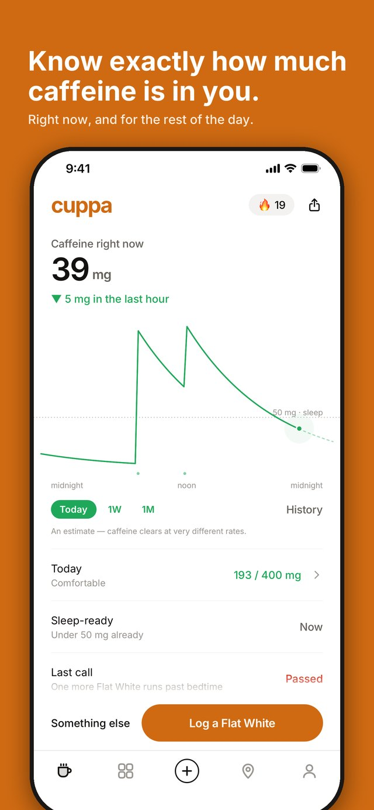
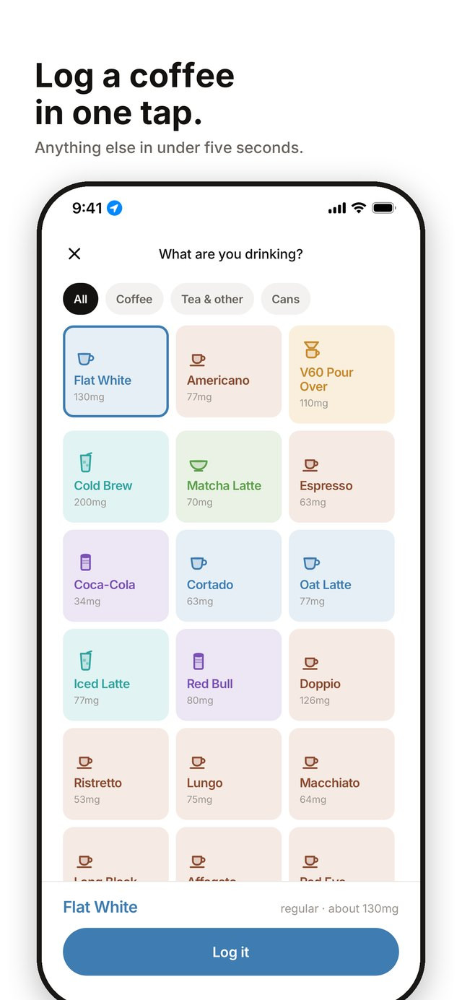
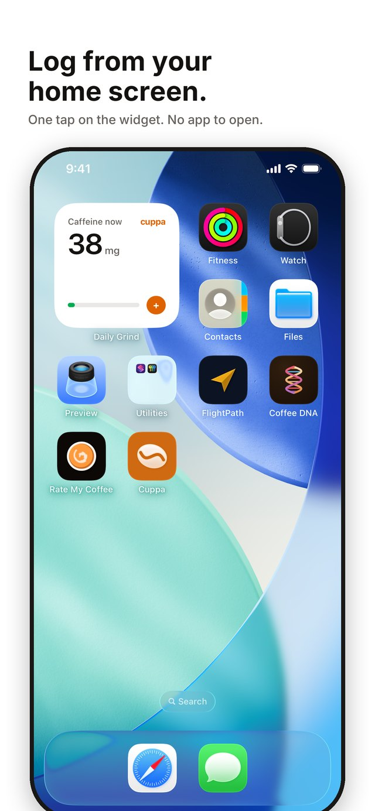
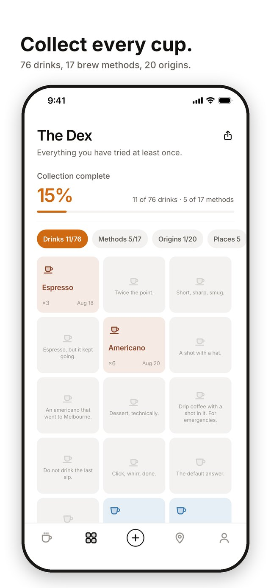
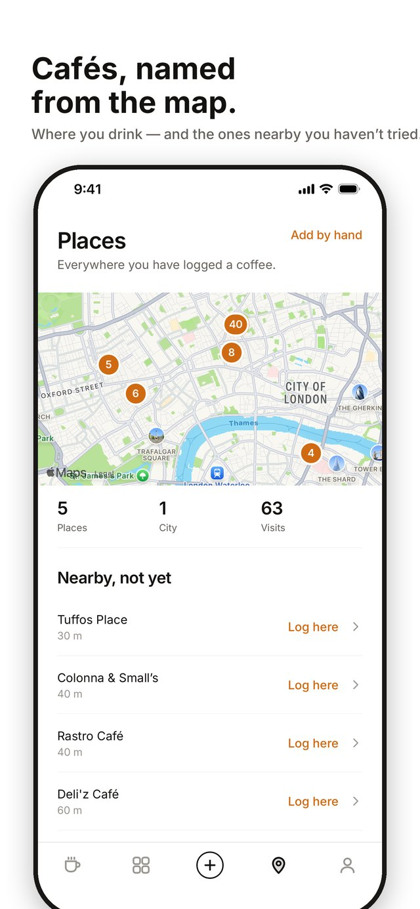

Press kit
Cuppa is a caffeine tracker for iPhone. Log a coffee in one tap; see the caffeine in you right now, when it clears, and how late you can have one more and still sleep. No account. Nothing leaves your phone.
In one paragraph
Cuppa turns every coffee into a number you can see — a live caffeine estimate drawn as a line across the day, like a stock chart — and reads it against your own bedtime: when you'll be sleep-ready, and your last call, the latest one more that still clears in time. The big button logs your usual in one tap, or from the home-screen widget without opening the app. Every drink, brew method, origin, roaster and café you try goes into the Dex, a collection of 76 drinks to find. Beans, recipes and ratings for people who brew at home; a monthly wrap; Apple Health for the sleep comparison. Everything stays on the phone: no account, no server, no tracking, and a single backup file when you want one.
The facts
Why it exists
Caffeine has a half-life of about five hours, which means the coffee you barely notice at four is still doing a third of its job at midnight. Most people who sleep badly after coffee have no idea which coffee did it. Cuppa was built to make that visible in five seconds a day — and, because coffee people are collectors, to make the logging itself something worth doing.
Screenshots
{kind=link}

Today: the line and the number{kind=link}

One tap to log{kind=link}

The home-screen widget{kind=link}

The Dex: collect every cup{kind=link}

Places, named from the mapIcon and wordmark
{kind=link}
Fair use
Use anything here to write about Cuppa. Please don't alter the icon or wordmark, and don't suggest an endorsement Cuppa hasn't given. The app's own name for its caffeine figure is an estimate; if you quote a number, the caveat belongs with it.